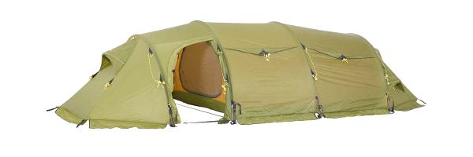
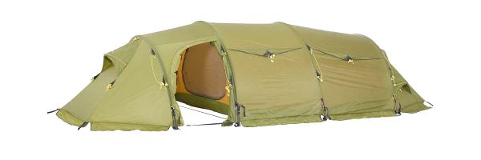

Nordmarka 3 camp, 3 manns telt
Nordmarka 3 Camp er et tunneltelt for bruk i vår, sommer og høst-sesongen. Dette er et godt og solid telt med løsninger og som egner til både korte og lange turer.
Pris: 2 499,-
Rondane 3 camp, 3 manns telt
Kompakt og solid tremannstelt, godt tilpasset et nordisk klima. Lav, aerodynamisk form som gjør teltet veldig stabilt i all slags vær. Rask å sette opp.
Pris: 4 999,-
Svea 3 camp, 3 manns telt
Stort og romslig 3 manns telt. Tunneltelt for helårsbruk med 2 innganger og 2 camp-rom. God takhøyde gir følesen av mer luft i teltet og gir derfor økt komfort. AirFlow ventilasjonssystem.
Pris: 7 999,-
Nordmarka 3 camp, 3 manns telt
Nordmarka 3 Camp er et tunneltelt for bruk i vår, sommer og høst-sesongen. Dette er et godt og solid telt med løsninger og som egner til både korte og lange turer.
Pris: 2 499,-